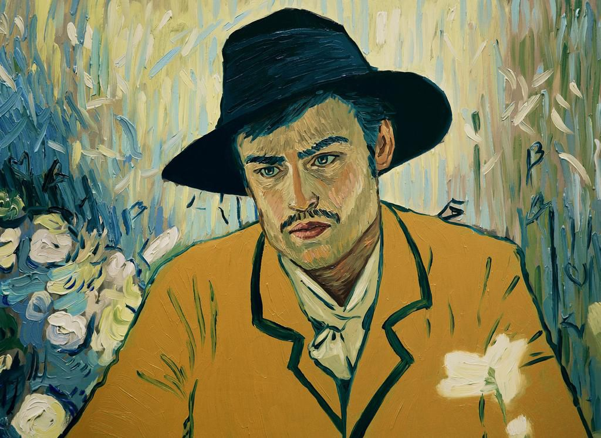
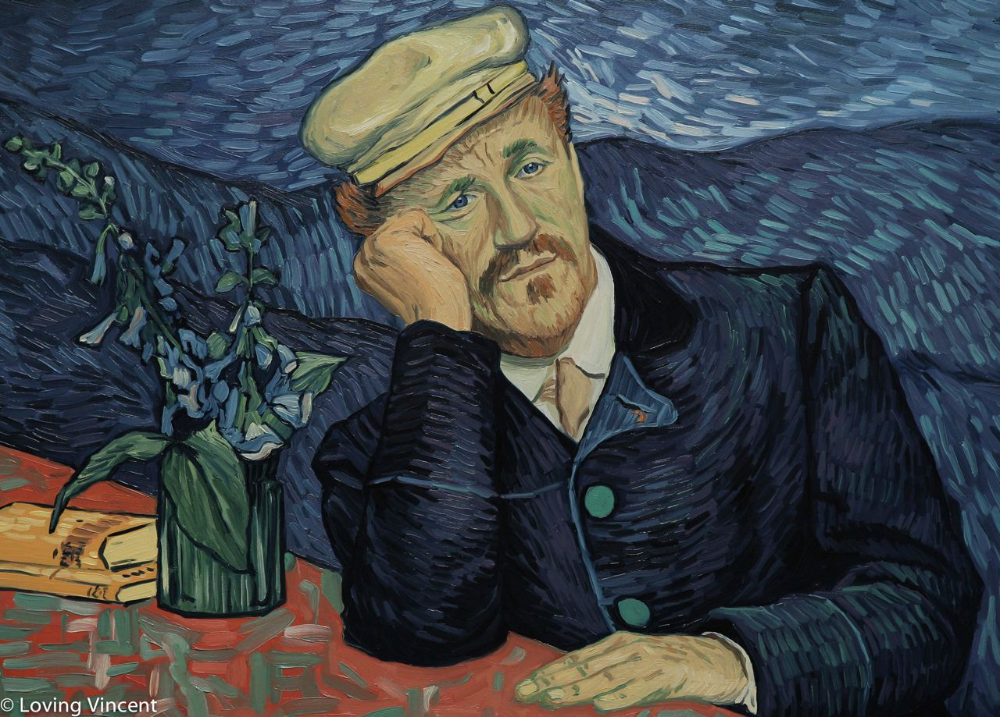
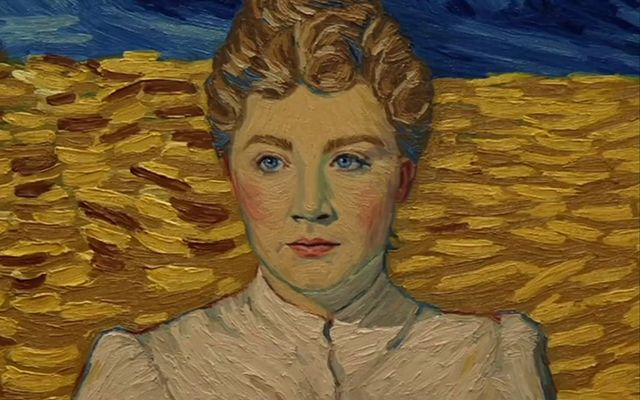
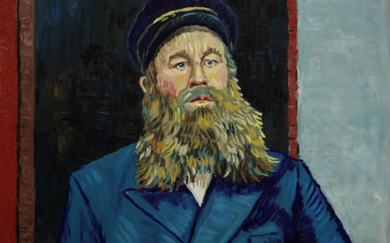
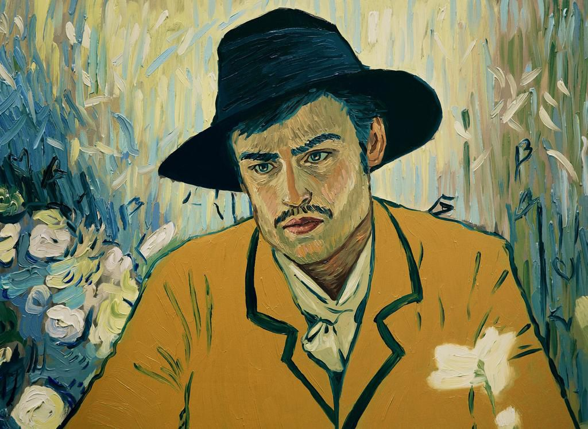
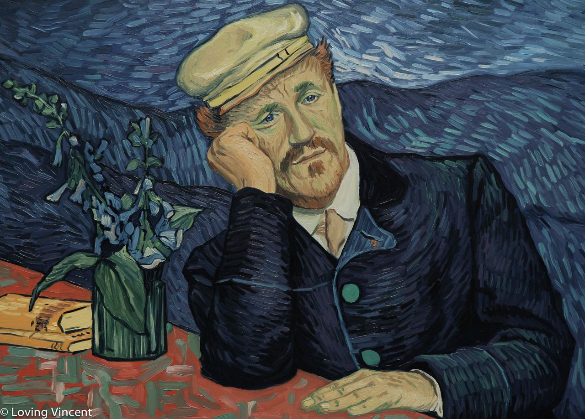
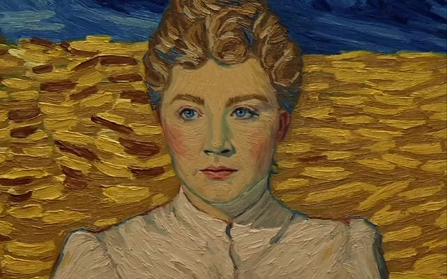
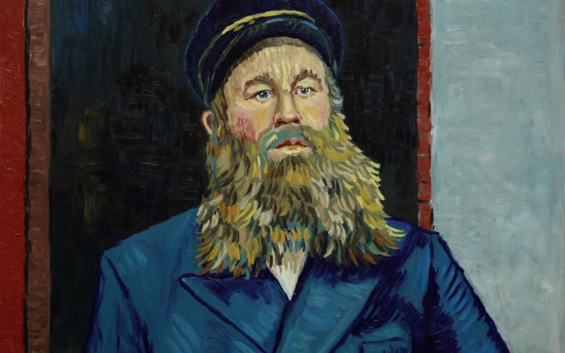

Loving Vincent
Loving Vincent es una película biográfica animada experimental de 2017 sobre la vida del pintor neerlandés Vincent van Gogh, enfocada particularmente en las circunstancias de su muerte en 1890. Es la primera película animada completamente usando pinturas.
Es una producción esencialmente polaca, con aportes del Reino Unido. Fue escrita y dirigida por Dorota Kobiela y Hugh Welchman. Su desarrollo fue financiado por el Instituto Polaco de Películas (Polski Instytut Sztuki Filmowej), y parcialmente mediante una campaña de Kickstarter.
Reparto
 








Vincent Van Gogh

Vincent Willem van Gogh (30 de marzo de 1853 - 29 de julio de 1890), fue un pintor neerlandés, uno de los principales exponentes del postimpresionismo.
Pintó unos 900 cuadros (entre ellos 43 autorretratos y 148 acuarelas) y realizó más de 1600 dibujos. Una figura central en su vida fue su hermano menor Theo, marchante de arte en París, quien le prestó apoyo financiero de manera continua y desinteresada. La gran amistad entre ellos está documentada en las numerosas cartas que se intercambiaron desde agosto de 1872. De las 800 cartas que se conservan del pintor, unas 650 fueron para Theo; las otras son correspondencia con amigos y familiares.
Van Gogh fue esencialmente autodidacta. Desde joven tuvo inclinación hacia el dibujo. Su primer trabajo fue en una galería de arte. Más tarde se convirtió en pastor protestante y en 1879, a la edad de 26 años, se marchó como misionero a una región minera de Bélgica, donde comenzó a dibujar a la gente de la comunidad local. En 1885 pintó su primera gran obra, Los comedores de patatas. En ese momento su paleta se componía principalmente de tonos sombríos y terrosos. La luz y la preferencia por los colores vivos por la que es conocido surgió posteriormente, cuando se trasladó al sur de Francia, consiguiendo su plenitud durante su estancia en Arlés en 1888.